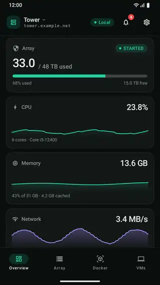
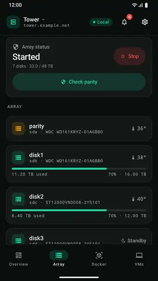

NOVA
شبكات وملفات
NOVA is a community-built, open-source Android client for Unraid® servers — array health, container and VM state, live system metrics in a clean Material 3 interface tuned for quick mobile checks. Talks to your server through the official Unraid API (the Connect plugin's GraphQL endpoint) over your
✓ ترخيص مفتوح (GPL-3.0-only) · آخر تحديث: 2026-11-17
0.1.48الإصدار
2.6 MBالحجم
GPL-3.0-onlyالرخصة
Open in Kanzتحميل APK (2.6 MB)
Download APK
SHA-256: a4705d3e89b5af4ccad5c843e036f184df05a153eb78d39a843b9fb2a41b9db5


امسح الكود لفتح صفحة التطبيق
Scan to open this app page
لو كنز مش متثبت عندك: نزّل متجر كنز.
Not installed? Get the Kanz store.